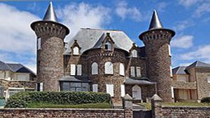
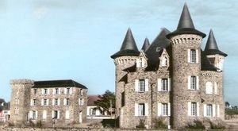
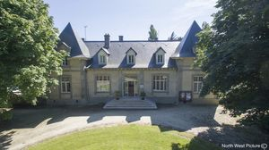
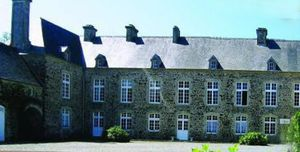

Recensement Jean-Claude Truffet




| Département | 50 — Manche |
| Canton | Les Pieux |
| Commune | Barneville_Carteret |
| Type d'édifice | Château |
| Période d'origine | XVI-XVIII-XIX |
| Coordonnées GPS | 49° 22' 55 74" Nord, 1° 45' 20,65" Ouest |
Trois châteaux dans cet article; Carteret, Chimay, Caillemont et Douits. CARTERET, Barbey dAurevilly, écrivain, enfant, y est venu en vacances chez les Lefebvre dAnneville (Hyacinthe Robert Lefebvre dAnneville, [1741-1826], fut le dernier seigneur de Carteret et Maire de la commune sous lEmpire). Barbey a situé dans ce manoir la deuxième partie de son roman « Une vielle maîtresse »,.ce manoir est une construction de la première moitié du XVIIIe siècle à lemplacement dun manoir plus ancien remontant au moins au XVIe siècle, dont il reste une porte à linteau en accolade et un escalier à vis intérieur. Le constructeur de lactuel manoir est Robert Henri Le Rossignol, lieutenant général au bailliage de Saint-Sauveur-le-Vicomte, maître des Eaux et Forêts de Bricquebec, qui avait acheté la terre de Carteret en 1718. CHIMAY, Fin 1911, laméricaine Clara Ward, fille dun millionnaire du Michigan, achète avec son quatrième mari litalien Albano Casellato afin dy construire le château de Chimay sur les plans de larchitecte Roberti. Clara Ward obtient son titre de princesse de Chimay en épousant un prince belge désargenté en 1890. La construction du château dura 2 ans, de 1912 à 1914 et il fut aussitôt réquisitionné pour loger les jeunes soldats belges en transit. Clara Ward décède en 1916. Elle nhabitera jamais son château. En 1927, la bâtisse est transformée en « Hôtel pension du château » de 40 chambres. De 1946 jusquen 1976, le château de Chimay sera rebaptisé « château Patrick » et servira de colonie de vacances aux enfants dArgentan. Il aura plusieurs propriétaires mais la gestion restera pendant ces 30 ans à la paroisse dArgentan. Au milieu des années 80, le château est mis en vente. Une thalassothérapie est envisagée mais le projet tombe à leau. Il faut attendre 1989 pour que le château de Chimay soit transformé en hôtel-restaurant mais en 1994 laffaire fait faillite. Il est aussitôt acheté par une société civile immobilière (SCI) qui le transformera, lagrandira et le divisera en plusieurs appartements.
CAILLEMONT, est un imposant bâtiment historique en pierre situé sur la côte normande, en face des îles Anglo-normandes. Ce manoir du XVIIIe siècle, chambre d'hôtes des propriétaires, Catherine et Eric Fouché. DOUITS 1889, les affaires de Léon Jules de La Roche-Courbon, ne devinrent guère brillantes. Il navait pas remboursé la totalité de ses dettes à la société Générale ni à un grand nombre de particuliers.
Douits, hypothéqué, fut saisi le 19 janvier 1900 et vendu aux enchères. Le château et le parc furent acquis le 14 mai 1900 par un de ses cousins, Henri Camille Gache de Courbon-Blenac, dit de la Roche-Courbon, Henri de Courbon-Blénac fit vendre le château aux enchères le 30 décembre 1903. Il fût acquis par Auguste Hialrion Bressand (alias Bressan), premier promoteur de Barneville plage en 1896. Le 5 aout 1916, le château fût de nouveau proposé aux enchères et adjugé à Michel Lemoigne, négociant à Portbail, seul enchérisseur. Le 11 aout 1925, Michel Lemoigne vendit la propriété à Clara Hélène Barker veuve de William-Nathaniel Berkeley, domiciliée à New-York et à Ellen Douglas Hoge demeurant à Wheeling chacune pour une moitié. Ellen Hoge céda sa demi -part à Mme Berkeley , le 28 février 1927. Le château des Douits sinistré pendant la 2eme guerre mondiale, fut vendu le 25 février 1949, par Clara Berkeley à la commune de Carteret. Le château sera transformé en Mairie avec 4 logements.Le 20 septembre 1947, le conseil municipal de Carteret décida que lavenue des Douits porterait le nom davenue Berkeley dans lattente de la construction dun groupe scolaire dans le parc derrière le château qui devait porter le nom de groupe Berkeley et que Clara Berkeley serait honorée du titre de citoyenne dhonneur de Carteret en remerciement de la compréhension dont elle avait fait preuve lors des négociations sur le prix de vente (vu qui na pas eu de suit, près la fusion des communes de Barneville-sur-mer et de Carteret, effective au 1er janvier 1965, sous la dénomination de Barneville-Carteret, le château est devenu « mairie-annexe de Carteret.
Chimay, Clara Ward Douits Léon Jules de La Roche-Courbon
"
Trois châteaux dans cet article; Carteret grav-1, Chimay grav 2-3 Caillemont grav 5 et Douits grav-4. GPS : 49° 22' 55 74" Nord, 1° 45' 20,65" Ouest